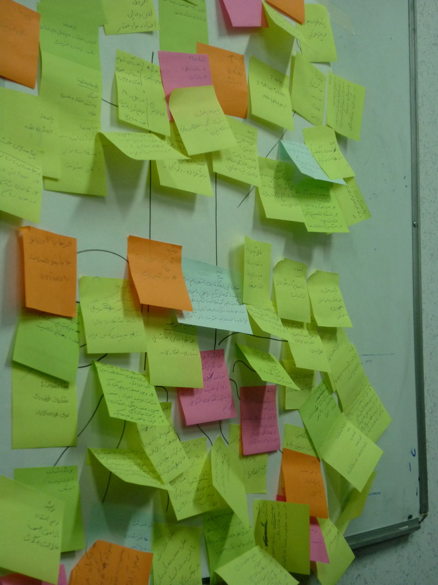

پذيرش > تریبون > گزارش كمپين > روایت خشونت و مقاومت با ۲۰۹ نفر در کارگاه های کمپین


 روایت خشونت و مقاومت با ۲۰۹ نفر در کارگاه های کمپین روایت خشونت و مقاومت با ۲۰۹ نفر در کارگاه های کمپین
4 آذر 1389 - - نسخه قابل چاپ
چرا 25 نوامبر روز جهانی حذف خشونت علیه زنان نامیده شد
سه دختر خانواده ميرابال، پاتريا، مينروا و ماريا ترزا در سالهای 1924، 1927 و 1935 درمنطقه ای که امروز در جمهوری دومينيکن استان سی باس ناميده ميشود متولد شدند. هر سه تحصيلات متوسطه را به پايان رسانده، مينروا و ماريا برای ادامه تحصيلات وارد دانشگاه شدند. هر سه خواهر و همسرانشان درگير مبارزه با رژيم "تراجيلو" بودند، و عليرغم پيگردها و زندانی شدنهای مکرر به شرکت در فعاليتهای سياسی عليه خودکامگی های " تراجيلو" ادامه ميدادند. در ژانويه 1960، پاتريا هدايت اجلاسی را به عهده داشت که عاقبت در ژوئيه همان سال "نهضت مقاومت سری" را بنياد نهاد.
ازآن پس خواهرها و ساير يارانشان در سراسر کشور بيش از پيش مورد فشار و و آزار رژيم مستبدانه " تراجيلو" قرار گرفتند.
اوايل نوامبر، "تراجيلو" اعلام کرد که دو مشکل اساسی او کليسا و خواهران ميرابال هستند. روز 25 نوامبر، هنگامی که خواهران ميرابال در مسير رفتن به ملاقات همسران زندانيشان بودند، در يک "حادثه رانندگی" کشته شدند. اين حادثه خشم و اعتراض عمومی را برانگيخت. قتل فجيع خواهران ميرابال در واقع رويدادی شد که به نهضت عمومی ضد تراجيلو کمک کرد، چنانکه پس از گذشت يک سال ديکتاتوری تراجيلو سرنگون شد. خواهران ميرابال که به "پروانه های فراموش نشدنی" تشبيه شده بودند سمبل مقاومت ملی و بويژه زنان دومينيکن تبديل شدند، آنچنان که در شعرها، آوازها و کتابها تقدير و تحسين می شدند.
شرح زندگی و مبارزات آنها، الهام بخش تاليف رمانی به نام "در زمان پروانه ها"(In The Time of Butterflies) توسط "جوليا آموازر" (Julia Alvarez) شد. رمان، توصيف رنجها و آلام آنان درآخرين روزهای ديکتاتوری "تراجيلو" است.
خاطره خواهران ميرابال و تلاش و تقلای آنان برای احقاق آزادی وحقوق بشر آنان را به سمبل احترام و الهام در جهان بدل نمود. خواهران ميرابال نمونه های بارز مقاومت در برابر تعصب و خودکامگی هستند. زندگی آنان نه فقط برای مردمان هم دوره شان بلکه پس از مرگشان و نه تنها در جمهوری دومينيکن که در همه کشورهای دنيا سرمشق و احترام انگيز است.

پس از آن ، مجمع عمومی سازمان ملل در تاريخ 17 دسامبر 1999 و در هشتاد و سومين جلسه عمومی دوره پنجاه و چهارم خود و بر اساس گزارش "کميته سوم اجرائی" و با توافق نمايندگان 79 کشور عضو، قطعنامه تعيين روز 25 نوامبر به عنوان "روز جهانی حذف خشونت عليه زنان " را تصويب نمود.
اين قطعنامه بنا بر پيشنويسی که دو ماه پيش از آن توسط نماينده دومينيکن از سوی نمايندگان 74 کشور به "کميته سوم اجرائی" مجمع عمومی پيشنهاد شده بود، صادر شد. بر اساس مفاد پيشنويس مزبور که عنوان " روز جهانی حذف خشونت عليه زنان" را بر خود داشت، مجمع عمومی، تمامی سازمانها و نهادهای بين المللی ذيربط را به سازماندهی فعاليتهايی گسترده در طرح مسئله خشونت عليه زنان در آن روز دعوت می نمايد.
پيشنويس خاطرنشان ميکند که اعمال خشونتهای مزمن عليه زنان فرصتهايی را که آنان برای به دست آوردن برابريهای حقوقی، اجتماعی، سياسی و اقتصادی در جامعه دارند نابود ميکند. اين پيشنويس همچنين از مجمع می خواهد تا بر مفهوم عبارت "خشونت عليه زنان" به صورت زير تاکيد مجدد نمايد:
خشونت عليه زنان به معنی قائل شدن هر گونه خشونت بر اساس جنسيت که نتيجه و يا پيامد احتمالی آن صدمه يا آزار فيزيکی، جنسی يا روانی زنان را در بر داشته باشد، صرفنظر از اينکه در محيط های عمومی و يا در زندگی خصوصی رخ دهد، اطلاق میشود.
آموزش به مثابه راهکاری برای حذف خشونت:
کمپین یک میلیون امضا در طول 4 سال فعالیت خود آموزش را یکی از راهکارهای جدی به منظور تغییر نگرش جامعه قلمداد کرده است و به همین منظور همواره اقدام به برگزاری دوره های آموزشی در زمینه های مختلف نموده است. یکی از محورهای آموزشی در کمپین یک میلیون امضا " حذف خشونت علیه زنان" است.
کارگاه های آموزشی که کمپین در این زمینه برگزار می نماید، شامل مباحثی نظیر آشنایی با خشونت علیه زنان، انواع آن، ریشه ها و پیامدهای خشونت، چرخه خشونت و نیز راهکارهایی برای مقابله با آن است.
همچنین کمپین در کنار این آموزش ها ، کارگاه هایی را در رابطه با نوشتن از تجربیات خشونت نیز برگزار نموده است که گاه برخی از روایت هایی که زنان از تجربیات خود در این کارگاه ها نگاشته اند در سایت کمپین یک میلیون امضا منتشر شده است.
در طول یک سال گذشته مجموعا ۲۰۹ نفر توسط کمپین یک میلیون امضا در زمینه آشنایی با خشونت علیه زنان آموزش دیده اند. این دوره های آموزشی در شهرهای مختلف نظیر تهران، زنجان، مشهد، رشت، ساری و اصفهان برگزار شده است.
.
ارسال به
بالاترین
،
توییتر
،
فریندفید
،
فیسبوک
در همين بخش :
 دهمین دورۀ مراسم تندیس صدیقه دولت آبادی ۱۳۹۲ دهمین دورۀ مراسم تندیس صدیقه دولت آبادی ۱۳۹۲
کارت پستالهایی به بهانهی هشت مارس و به یاد همهی مبارزین راه برابری
بیانیه بیش از 350 تن از مدافعان حقوق زنان به مناسبت روز جهانی زن؛ زنان هر روز فرودستتر میشوند
لباسی که برای تن ما دوخته اند! /اعظم بهرامی
چالشها و چشمانداز فعالیت مدنی زنان
ديگر بخش ها :
طرح یک میلیون امضا
|
مقالات
|
سایت نوشته ها
|
اخبار
|
گزارش كمپين
|
گفت و گو
|
علیه سکوت
|
كوچه به كوچه
|
نامه های شما
|
گزارش ویژه
|
گفتگو با اعضا
|
ویژه سالگرد کمپین
|
تصویر برابری
|
دل آرام علی
|
تریبون
|
مقالات
|
تاریخ شفاهی
|
خارج از چارچوب
|
کتابخانه
|
درباره کمپین
|
کمپین در شهرها
|
کمپین در بند
|
صدای تغییر
|
ویژه 22 خرداد
|
لایحه حمایت از خانواده
|
گالری
|
عشا مومنی
|
امیر یعقوبعلی
|
خدیجه مقدم
|
راحله عسگری زاده و نسیم خسروی
|
پروین اردلان،جلوه جواهری، مریم حسین خواه، ناهید کشاورز
|
زینب پیغمبرزاده
|
سعیده امین، سارا ایمانیان، محبوبه حسین زاده، ناهید کشاورز و همایون نامی
|
احترام شادفر
|
نسیم سرابندی زاده،فاطمه دهدشتی
|
وبلاگ مهمان
|
پرونده خرم آباد
|
دستگیری ها
|
مریم مالک
|
پرستو اللهیاری
|
مهرنوش اعتمادی
|
سمیه رشیدی
|
Other Languages
|
همراهان
|
«فراخوان کمپین ده روز با بهاره هدایت»
| English
|